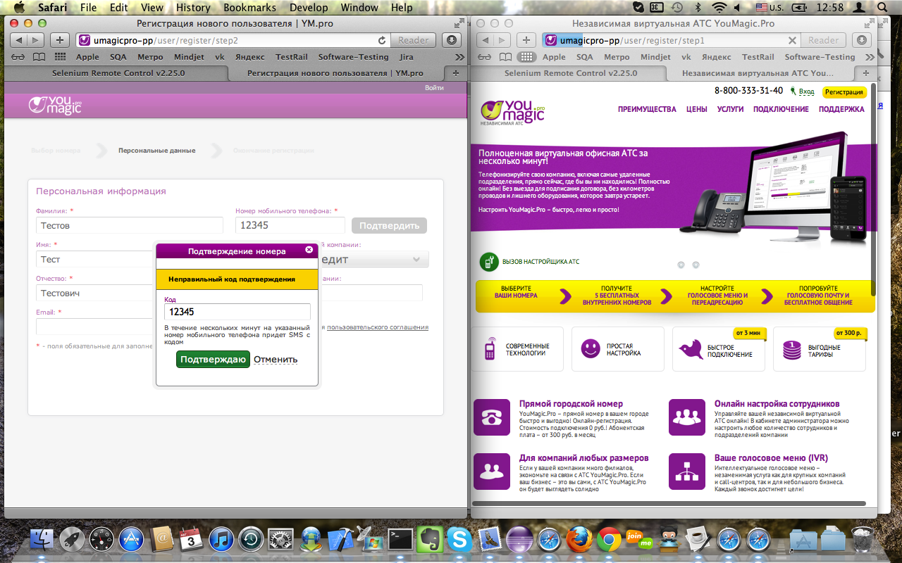
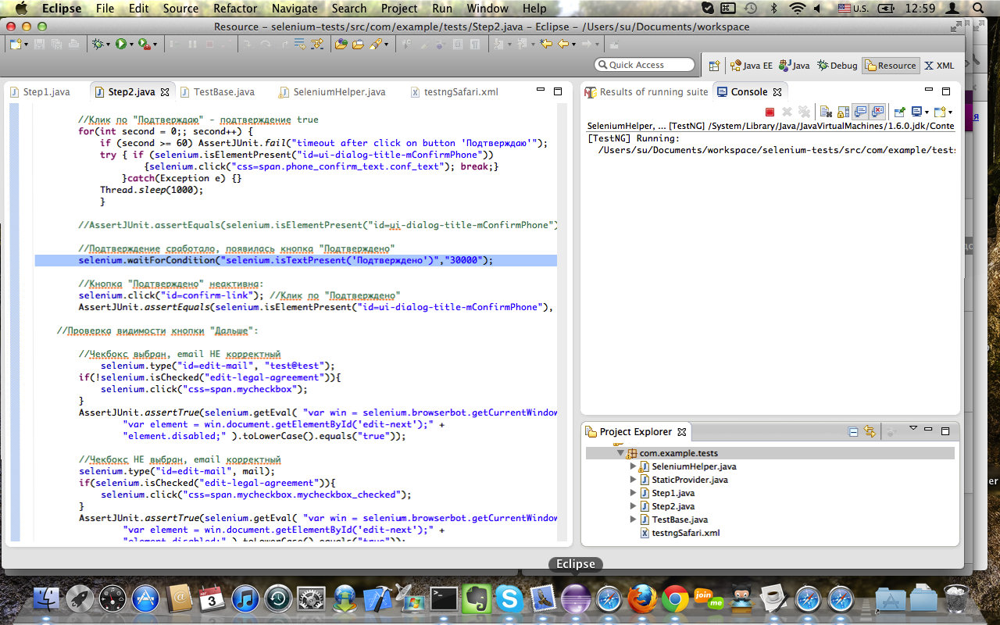

| user-agent: | Mozilla/5.0 (Macintosh; Intel Mac OS X 10_7_4) AppleWebKit/536.25 (KHTML, like Gecko) Version/6.0 Safari/536.25 |
| selenium-rc: | vUNKNOWN [UNKNOWN] |
| selenium-core: | vUNKNOWN [UNKNOWN] |
| LoggingSelenium: | revision [96] |
| test-started: | 12:57:51 03-08-2012 |
| test-finished: | 12:59:26 03-08-2012 |
| test-duration [ms]: | 94,859 |
| commands processed: | 80 |
| verifications processed: | 26 |
| failed commands: | 2 |
| last failed message: | Timed out after 30000ms |
| commands not logged: | {getHtmlSource} |
| Selenium-Command | Parameter-1 | Parameter-2 | Res.RC | Res.Selenium | Time [ms] | Calling-Class with Linenumber |
| executing createNewLoggingSelenium() | ||||||
| windowFocus | OK | OK | 9 | com.example.tests.SeleniumHelper#67 | ||
| windowMaximize | OK | OK | 8 | com.example.tests.SeleniumHelper#68 | ||
| executing getSelenium() | ||||||
| getLocation | OK | file:///var/folders/jp/r5s_0wgs1317jmdsddx0hpj00000gp/T/customProfileDir52cb32666d4242be8e5621a535449320/core/Blank.html?start=true | 28 | com.example.tests.SeleniumHelper#34 | ||
| executing testStep2() | ||||||
| Step2 with lastn = Тестов name= Тест middlen= Тестович mail= test@test.ru sfera= //div[@id='edit-company-scope-wrapper']/span/ul/li[2] num= 0 | ||||||
| open | http://umagicpro-pp/ | OK | OK | 4513 | com.example.tests.Step2#11 | |
| click | id=bHRegisterText | OK | OK | 126 | com.example.tests.Step2#12 | |
| waitForPageToLoad | 30000 | OK | OK | 8014 | com.example.tests.Step2#13 | |
| getText | css=div.content_body_header | OK | Выбор номера | 8 | com.example.tests.Step2#14 | |
| isElementPresent | id=error | OK | false | 8 | com.example.tests.Step2#15 | |
| click | css=span[name="abc-numbers"] | OK | OK | 37 | com.example.tests.Step2#16 | |
| click | id=edit-next | OK | OK | 15 | com.example.tests.Step2#18 | |
| waitForPageToLoad | 30000 | OK | OK | 1977 | com.example.tests.Step2#19 | |
| getText | css=div.content_body_header | OK | Персональная информация | 8 | com.example.tests.Step2#20 | |
| isElementPresent | id=error | OK | false | 7 | com.example.tests.Step2#21 | |
| type | id=edit-last-name | Тестов | OK | OK | 18 | com.example.tests.Step2#26 |
| type | id=edit-first-name | Тест | OK | OK | 8 | com.example.tests.Step2#27 |
| type | id=edit-middle-name | Тестович | OK | OK | 8 | com.example.tests.Step2#28 |
| click | css=span.text | OK | OK | 11 | com.example.tests.Step2#29 | |
| click | //div[@id='edit-company-scope-wrapper']/span/ul/li[2] | OK | OK | 13 | com.example.tests.Step2#30 | |
| type | id=edit-workers-count | 0 | OK | OK | 7 | com.example.tests.Step2#31 |
| isTextPresent | Подтвердить | OK | true | 11 | com.example.tests.Step2#36 | |
| type | id=edit-personal-phone | 12345 | OK | OK | 8 | com.example.tests.Step2#39 |
| click | id=confirm-link | OK | OK | 115 | com.example.tests.Step2#40 | |
| isElementPresent | id=ui-dialog-title-mConfirmPhone | OK | true | 7 | com.example.tests.Step2#41 | |
| isTextPresent | Подтверждение номера | OK | true | 10 | com.example.tests.Step2#42 | |
| type | smscode | 54321 | OK | OK | 64 | com.example.tests.Step2#43 |
| click | css=span.phone_confirm_text.conf_text | OK | OK | 17 | com.example.tests.Step2#44 | |
| isElementPresent | id=ui-dialog-title-mConfirmPhone | OK | true | 12 | com.example.tests.Step2#45 | |
| isTextPresent | Неправильный код подтверждения | OK | false | 9 | com.example.tests.Step2#49 | |
| isTextPresent | Неправильный код подтверждения | OK | true | 8 | com.example.tests.Step2#49 | |
| click | css=span.modal_cansel_button_text | OK | OK | 11 | com.example.tests.Step2#56 | |
| isElementPresent | id=ui-dialog-title-mConfirmPhone | OK | false | 9 | com.example.tests.Step2#57 | |
| isTextPresent | Подтвердить | OK | true | 6 | com.example.tests.Step2#60 | |
| type | id=edit-personal-phone | 12345 | OK | OK | 8 | com.example.tests.Step2#64 |
| click | id=confirm-link | OK | OK | 74 | com.example.tests.Step2#65 | |
| isElementPresent | id=ui-dialog-title-mConfirmPhone | OK | true | 24 | com.example.tests.Step2#66 | |
| isTextPresent | Подтверждение номера | OK | true | 14 | com.example.tests.Step2#67 | |
| type | smscode | 12345 | OK | OK | 8 | com.example.tests.Step2#68 |
| isElementPresent | id=ui-dialog-title-mConfirmPhone | OK | true | 10 | com.example.tests.Step2#74 | |
| click | css=span.phone_confirm_text.conf_text | OK | OK | 55 | com.example.tests.Step2#75 | |
|  automaticErrorScreenshot2012-08-03_12-58.png | 374 | com.example.tests.Step2#83 | ||||
| waitForCondition | selenium.isTextPresent('Подтверждено') | 30000 | ERROR | com.thoughtworks.selenium.SeleniumException - Timed out after 30000ms | 30397 | com.example.tests.Step2#83 |
| Step2 with lastn = 123 name= 456 middlen= 789 mail= 111@111.com sfera= //div[@id='edit-company-scope-wrapper']/span/ul/li[3] num= -e | ||||||
| open | http://umagicpro-pp/ | OK | OK | 1280 | com.example.tests.Step2#11 | |
| click | id=bHRegisterText | OK | OK | 139 | com.example.tests.Step2#12 | |
| waitForPageToLoad | 30000 | OK | OK | 7186 | com.example.tests.Step2#13 | |
| getText | css=div.content_body_header | OK | Выбор номера | 9 | com.example.tests.Step2#14 | |
| isElementPresent | id=error | OK | false | 9 | com.example.tests.Step2#15 | |
| click | css=span[name="abc-numbers"] | OK | OK | 36 | com.example.tests.Step2#16 | |
| click | id=edit-next | OK | OK | 18 | com.example.tests.Step2#18 | |
| waitForPageToLoad | 30000 | OK | OK | 1460 | com.example.tests.Step2#19 | |
| getText | css=div.content_body_header | OK | Персональная информация | 7 | com.example.tests.Step2#20 | |
| isElementPresent | id=error | OK | false | 6 | com.example.tests.Step2#21 | |
| type | id=edit-last-name | 123 | OK | OK | 18 | com.example.tests.Step2#26 |
| type | id=edit-first-name | 456 | OK | OK | 7 | com.example.tests.Step2#27 |
| type | id=edit-middle-name | 789 | OK | OK | 7 | com.example.tests.Step2#28 |
| click | css=span.text | OK | OK | 12 | com.example.tests.Step2#29 | |
| click | //div[@id='edit-company-scope-wrapper']/span/ul/li[3] | OK | OK | 14 | com.example.tests.Step2#30 | |
| type | id=edit-workers-count | -e | OK | OK | 10 | com.example.tests.Step2#31 |
| isTextPresent | Подтвердить | OK | true | 9 | com.example.tests.Step2#36 | |
| type | id=edit-personal-phone | 12345 | OK | OK | 6 | com.example.tests.Step2#39 |
| click | id=confirm-link | OK | OK | 78 | com.example.tests.Step2#40 | |
| isElementPresent | id=ui-dialog-title-mConfirmPhone | OK | true | 57 | com.example.tests.Step2#41 | |
| isTextPresent | Подтверждение номера | OK | true | 8 | com.example.tests.Step2#42 | |
| type | smscode | 54321 | OK | OK | 9 | com.example.tests.Step2#43 |
| click | css=span.phone_confirm_text.conf_text | OK | OK | 13 | com.example.tests.Step2#44 | |
| isElementPresent | id=ui-dialog-title-mConfirmPhone | OK | true | 7 | com.example.tests.Step2#45 | |
| isTextPresent | Неправильный код подтверждения | OK | false | 8 | com.example.tests.Step2#49 | |
| isTextPresent | Неправильный код подтверждения | OK | true | 7 | com.example.tests.Step2#49 | |
| click | css=span.modal_cansel_button_text | OK | OK | 13 | com.example.tests.Step2#56 | |
| isElementPresent | id=ui-dialog-title-mConfirmPhone | OK | false | 11 | com.example.tests.Step2#57 | |
| isTextPresent | Подтвердить | OK | true | 9 | com.example.tests.Step2#60 | |
| type | id=edit-personal-phone | 12345 | OK | OK | 7 | com.example.tests.Step2#64 |
| click | id=confirm-link | OK | OK | 73 | com.example.tests.Step2#65 | |
| isElementPresent | id=ui-dialog-title-mConfirmPhone | OK | true | 24 | com.example.tests.Step2#66 | |
| isTextPresent | Подтверждение номера | OK | true | 9 | com.example.tests.Step2#67 | |
| type | smscode | 12345 | OK | OK | 8 | com.example.tests.Step2#68 |
| isElementPresent | id=ui-dialog-title-mConfirmPhone | OK | true | 8 | com.example.tests.Step2#74 | |
| click | css=span.phone_confirm_text.conf_text | OK | OK | 12 | com.example.tests.Step2#75 | |
|  automaticErrorScreenshot2012-08-03_12-59.png | 394 | com.example.tests.Step2#83 | ||||
| waitForCondition | selenium.isTextPresent('Подтверждено') | 30000 | ERROR | com.thoughtworks.selenium.SeleniumException - Timed out after 30000ms | 30415 | com.example.tests.Step2#83 |
| executing dismissSelenium() | ||||||
| close | OK | OK | 62 | com.example.tests.SeleniumHelper#77 | ||
{kind=link}
{kind=link}